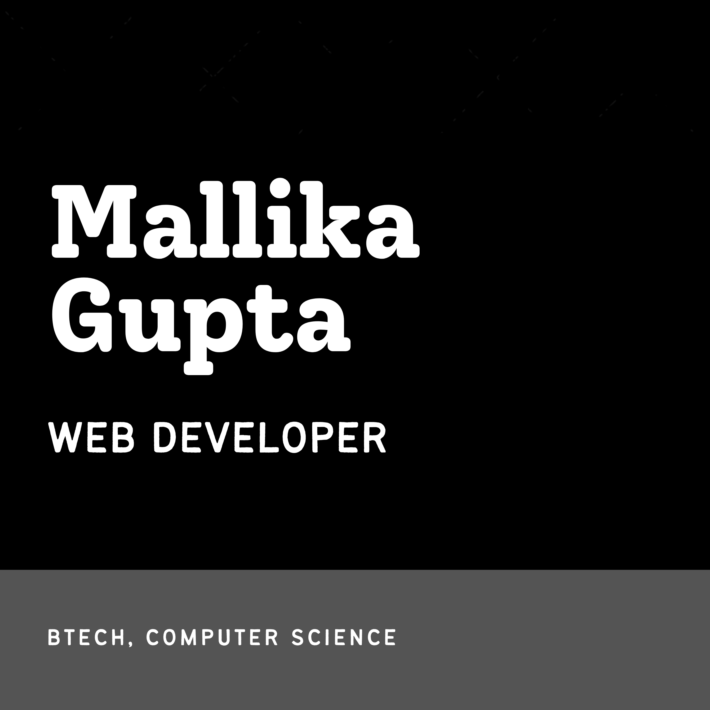

Hi there!
Thanks for dropping by.
I am Mallika Gupta. I am an India based final year BTech student currently studying Computer Science from SRM Institute of Science and Technology. I am a Front-end Web Developer with HTML,CSS and JS as my main languages for making websites. I also know C, C++, Java and SQL. I am currently trying my hands on making small web-applications and exploring more in Web-design. I wish to learn Backend and hope to become a Full-stack Web Developer in my near future. I am an accomplished coder and programmer, and I enjoy using my skills to contribute to the exciting technological advances that happen in our day to day life. I also have basic knowledge about Computer Networks, Operating System and Data Structure Algorithms.
What else I do??
I have always been into anything that involves creativity, art, interaction with public and involves innovation. Raised as an opinionated girl, I am thankful to my parents who allowed me to learn things and create my own ways. This has made me into a person who loves sharing her thoughts through her writings and illustrations to make people hear her in this loud, chaotic world. So yes, in my mean-time, I love reading, writing and drawing digital illustrations. I also share my small work on instagram and love connecting with people. I have also worked as a freelance writer earlier and was awarded with certificates and swags.
My key-strengths are communication, flexibility, quick and agile learner, leadership and team-work.
I'll be happy to join creative teams to work on young-eyed commercial or social projects. If you think we can create something great together, feel free to contact me!